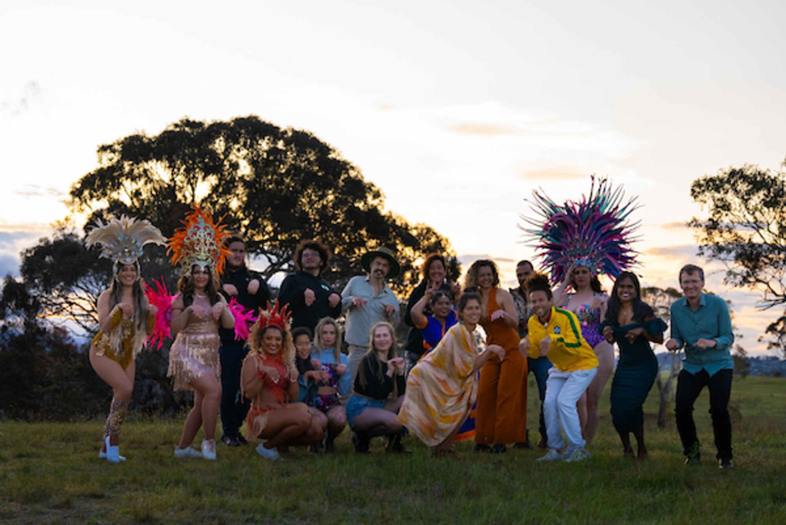
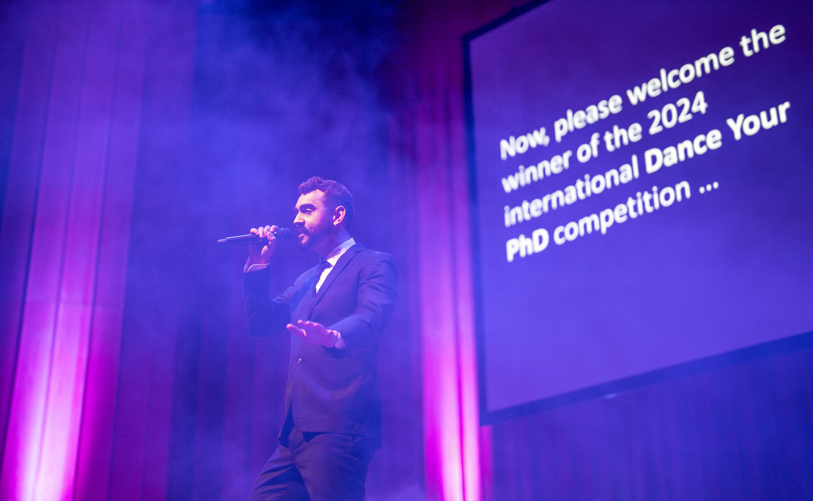
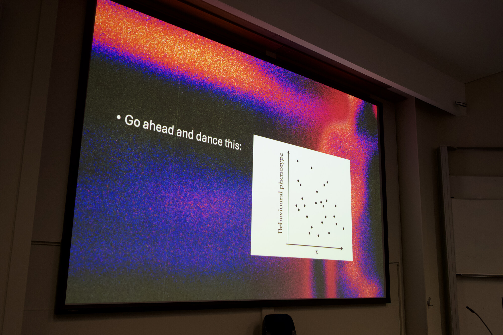
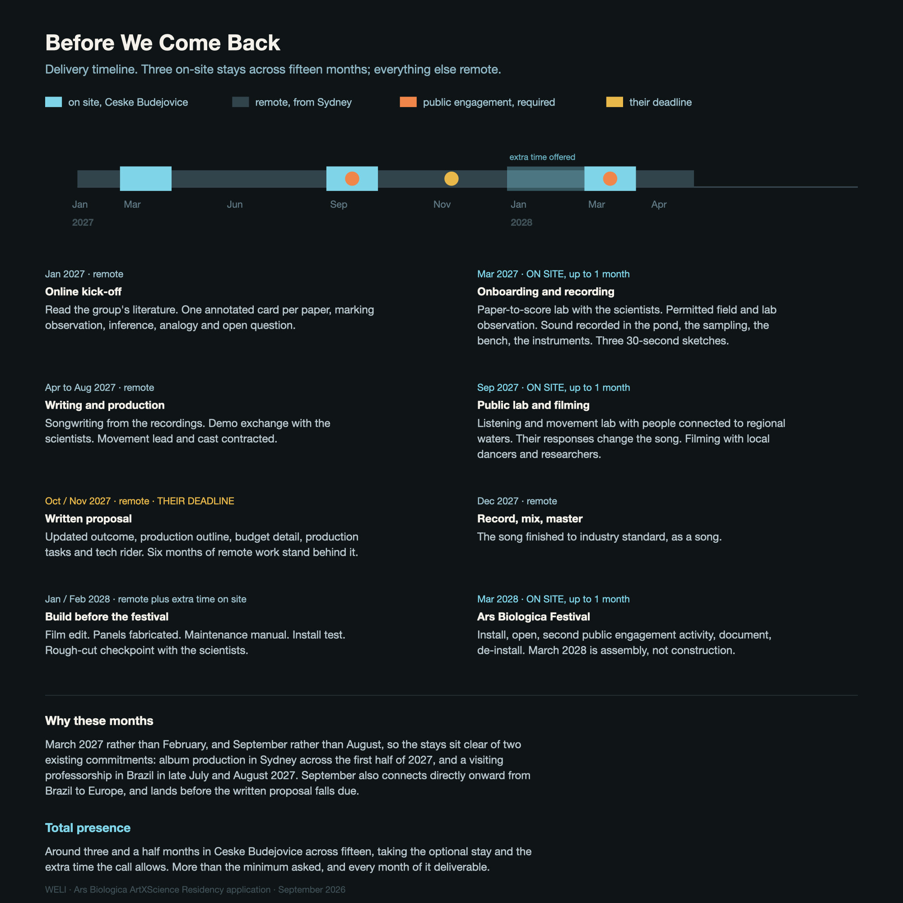

Visual support material
Ars Biologica ArtXScience Residency Dr WELI
Seven images and one video link. Each one is here because it answers a specific part of your portfolio criterion, in the order you would want to read them: the work, the recognition, the method, the people, and then the thing I am proposing to make with you.
Start here: Kangaroo Time (Club Edit)
The song and film that came out of my doctoral research on eastern grey kangaroo personality. AAAS Dance Your PhD Overall Winner 2024, and 238 media features across five continents. It is the format I am proposing to bring to the Institute of Hydrobiology: a song first, science woven through it.
Artistic vision

01 · Kangaroo Time, full cast on location
Artistic vision, and directing people in a real place.
Shot on location in kangaroo habitat, with a cast drawn from several communities. This is the working method I would use in South Bohemia: local people, in a real place, inside the work rather than illustrating it.

02 · Kangaroo Time, ensemble at dusk
Image-making and choreography at the same time.
Movement built for the frame rather than for a stage. The proposed work extends this from one screen to four translucent panels a visitor walks between.
Science collaboration

03 · Live, with the award announced behind
The work is recognised inside science, not only beside it.
Performing at the Australian National University as the screen reads "please welcome the winner of the 2024 international Dance Your PhD competition". I hold a PhD in ecology and evolution and read the primary literature directly.

04 · The method, in one slide
Turning a scientific figure into an instruction to move.
The slide reads "Go ahead and dance this:" beside a labelled behavioural phenotype graph, in a university teaching session. This is the paper-to-score lab I would run with your researchers in the first on-site month.
Working with communities

05 · A real room, with the work in front of it
Audiences this work has already been put in front of.
Kangaroo Time on screen in a university teaching session. The 2027 listening and movement lab goes further than this: people connected to regional waters hear drafts, move with them if they want to, and say what lands. Nobody has to dance or be filmed, and their responses change the song before it is finished.
What I would make with you

06 · The spatial work, plan view
Feasibility, stated as a drawing rather than a promise.
Four freestanding translucent panels, one projector, stereo sound. The film is cut into four sections so visitors meet them in their own order. No live water, no cultured organisms, no real-time data feed, no suspended rig. A two-surface contingency keeps the same logic if four panels cannot be safely hosted. This is a proposal drawing, not an executed work: my installation history is the honest gap in the portfolio above, and this is how I close it.

07 · Delivery timeline
Which month delivers what, across the full programme window.
Around three and a half months in Ceske Budejovice across fifteen, taking the optional stay and the extra time the call allows. Fabrication happens before the festival stay, so March 2028 is assembly rather than construction.